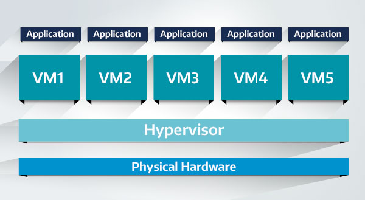

Virtualization in essence creates an internal computer system. The virtualization layer creates virtual hardware for virtual machine (VM), this is essential since VMs need all of the components (like storage, a CPU, a GPU, RAM and more) that regular computer need. The virtualization layer does this by taking those physical resources and turns them into virtual resources for the VM. Many virtual machines (VM) and be created on a single host computer.
The benefits of this technology are it allows users to optimize and utilize resources to their fullest extent. Another benefit would be manageability, where a user has the ability to move, clone and isolate VMs. This is hand for if a user needs to set up five VMs all with a specific type of software, the user would essentially have to set up a single VM and clone it four times.
In addition to manageability, sustainability is another bonus for using VMs, VMs contribute to sustainability by allowing for full utilization of hardware and helping with energy savings, which can reduce the number of physical computers needed. The last benefit of VMs is that they enhance security by having isolation between VMs so if one VM is compromised by either a software bug or a third party with malicious intent, they would only have access to the single VM and not the entire system.
